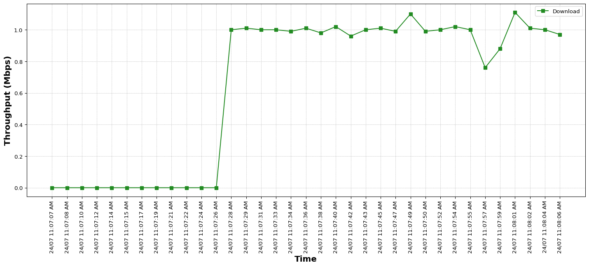
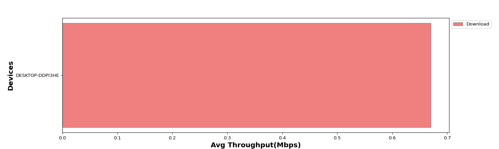
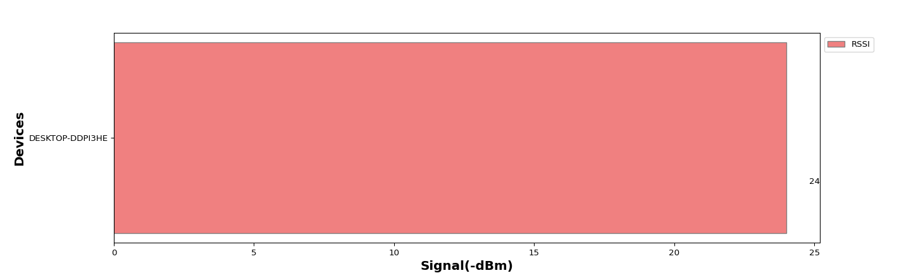

The Candela Client Capacity test is designed to measure an Access Point’s client capacity and performance when handling different amounts of Real clients like Android, Linux, Windows, MacOS and IOS. The test allows the user to increase the number of clients in user-defined steps for each test iteration and measure the per client and the overall throughput for this test, we aim to assess the capacity of network to handle high volumes of traffic while each trial. Along with throughput other measurements made are client connection times, Station 4-Way Handshake time, DHCP times, and more. The expected behavior is for the AP to be able to handle several stations (within the limitations of the AP specs) and make sure all Clients get a fair amount of airtime both upstream and downstream. An AP thatscales well will not show a significant overall throughput decrease as more Real clients are added.
The below tables provides the input parameters for the test
| Test Configuration |
|
||||||||||||||||||||||||||||||||||||||||||||



The below tables provides detailed information for the throughput test on each device.
| Device Type | Username | SSID | MAC | Channel | Mode | Offered download rate (Mbps) | Observed Average download rate (Mbps) | Offered upload rate (Mbps) | Observed Average upload rate (Mbps) | RSSI (dBm) | Average RTT (ms) | Packet Size(Bytes) | Average Rx Drop % | Average Tx Drop % |
|---|---|---|---|---|---|---|---|---|---|---|---|---|---|---|
| Windows | DESKTOP-DDPI3HE | NETGEAR_2G_wpa2 | e4:a4:71:93:70:e7 | 6 | 802.11abgn 20 1x1 | 1.0 | 0.67 | 0.0 | 0 | -24 | 23 | AUTO | 0.0 | 0.0 |